The classroom is now filled with real students instead of block figures. Each student is one shared body, male or female, dressed from who they are and what they wore today: hair, skin, eyes, glasses and a top. They write, read, glance, whisper, reach, raise a hand, hold things up, think, stretch and walk, with clips fitted to the game's own desk and chair. About one in ten is left-handed and does everything the other way round. Every image and video below is from this project.
The game spawns the skinned students in its own Classroom scene. What a student does is still decided only by what the player could see; the body shows it with a clip. These frames are from Play mode.
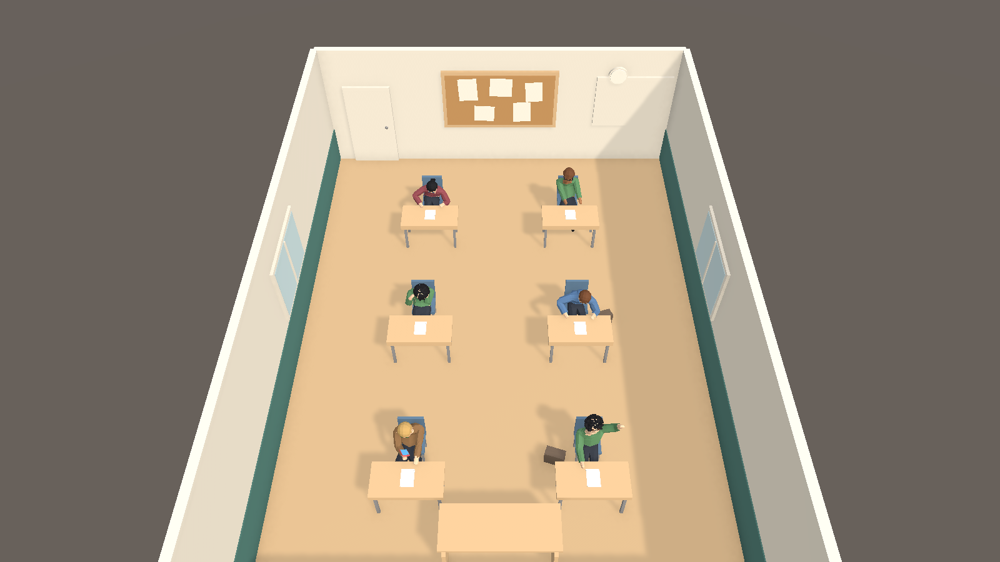
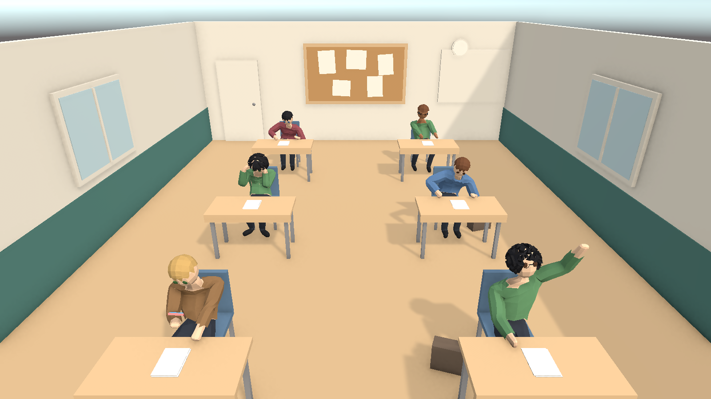
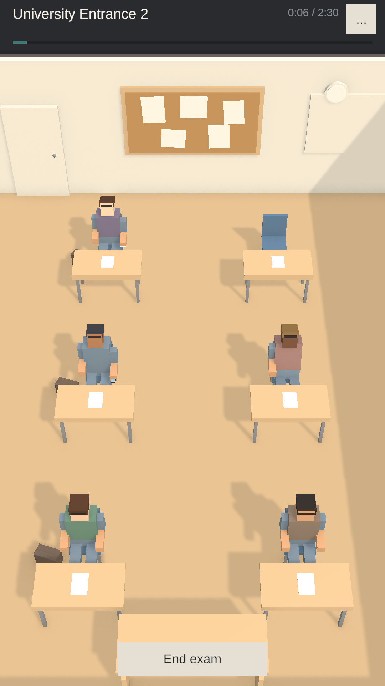
A student's look comes in two parts. The person in the seat is always the person the admission card describes.
Gender, skin, eyes, hair and glasses. The same in every exam, and checked against the admission photo. Skin and eyes on the photo always match the holder. Hair and glasses on the photo can be out of date (a haircut since), so a different face settles it and a different haircut is only a question.
The top's style and colour. New for each exam, never on the photo, never compared.
About one in ten students is left-handed, for life. It is never on the admission document and changes nothing in play. Left-handers play mirrored clips and hold things in the left hand.
Gender picks the body, the first name (eight male and eight female first names) and the hairstyles: short, cropped and curly for men; wavy, long and tied-back for women. The female body is the male one reshaped (chest, waist, hips, shoulders, neck, jaw) on the same joints, so every animation, hairstyle and pair of glasses works on both. Both are the same height, so both fit the chair and desk.
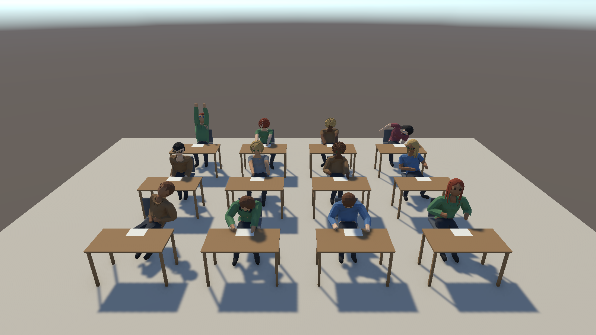
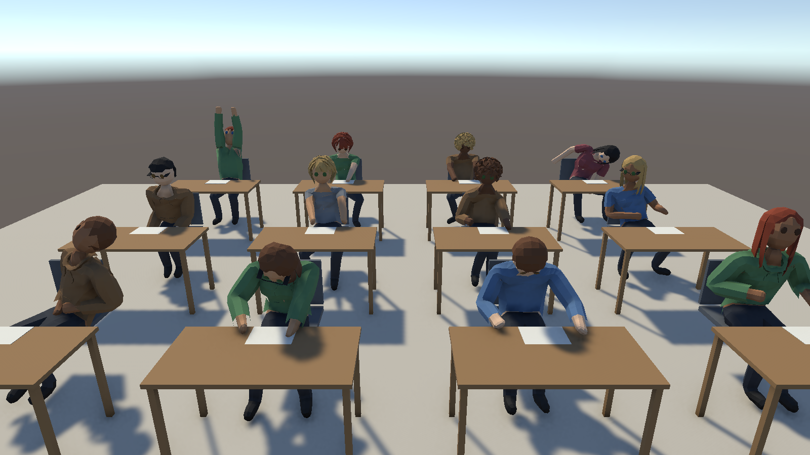
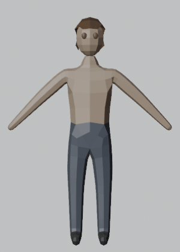
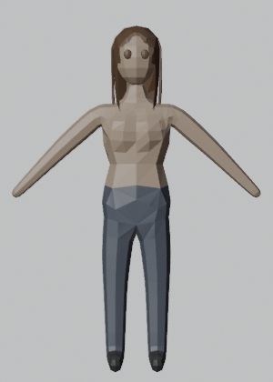
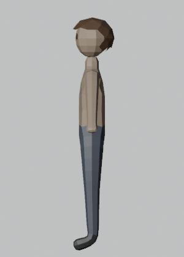
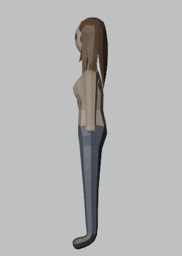
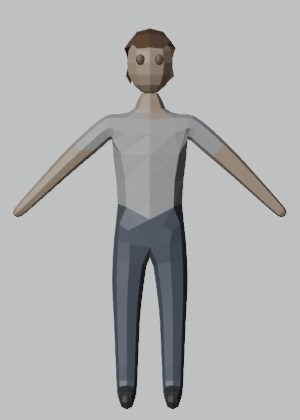
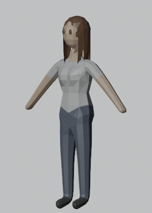
Five from Meshy. Tied-back is the cropped cap with a ponytail built in Blender. Hair is cut clear of the eyes, because eye colour is checked at the door.
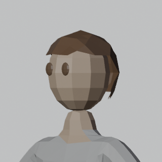
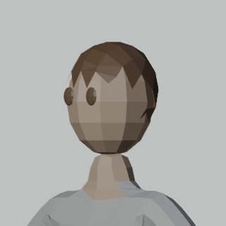
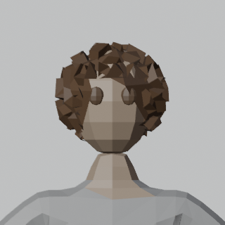
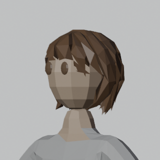
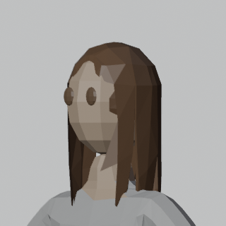
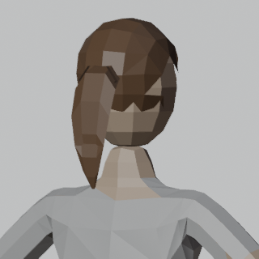
Left-handers write, erase, hold things, check a watch, raise a hand, stretch, think, stand, walk and hold out a document on the other side. Gestures aimed at a place (a neighbour, a bag, the clock) still turn toward that place, whichever hand the student uses.
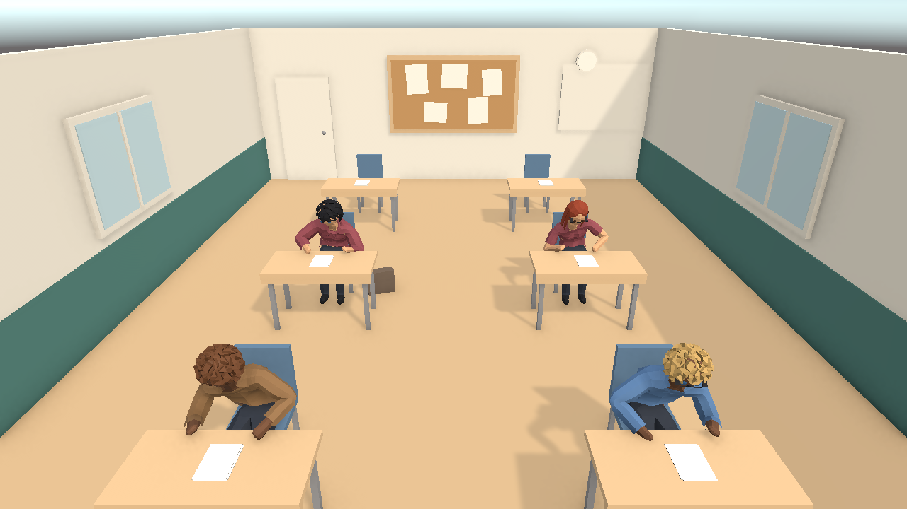
Short-sleeve t-shirt, long-sleeve t-shirt and a hoodie with a real hood lying on the back, a rolled rim, a kangaroo pocket and drawstrings. Each top is cut from its body's own torso and stands off the skin by 1.2, 1.8 or 2.6 cm. Front, side, back and from above (roughly the supervisor's angle), in the rest pose. The colours here are two palette entries; in the game the colour changes with what the student wore that day.
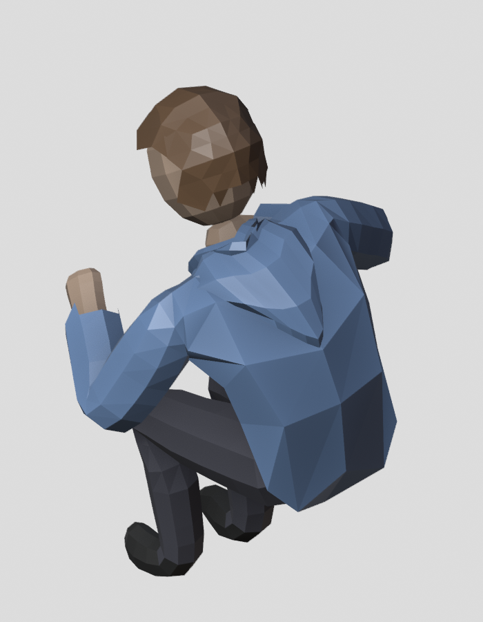
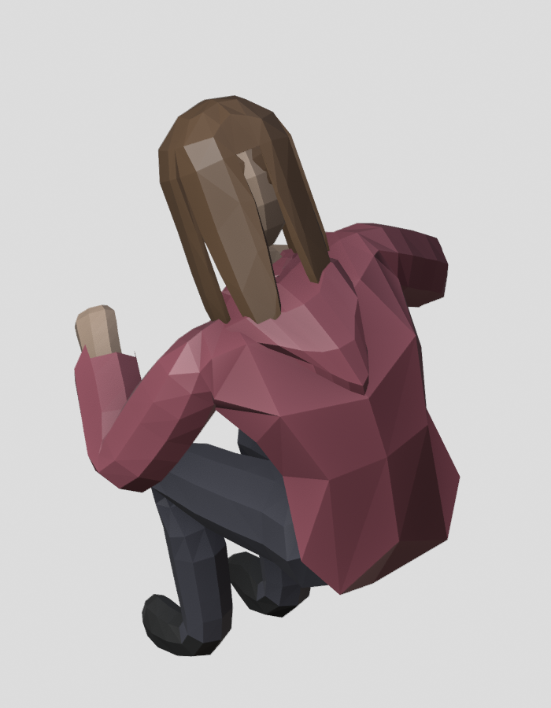
Every pose the game asks for, and the clips that show it. Handed clips have a mirror for left-handers; aimed clips have a mirror so they can turn either way. When a held gesture ends, the clip's own wind-down plays while the next pose fades in, so hands come down instead of snapping.
One body built by a Blender script and rigged by Meshy's auto-rig, in a male and a female shape on the same skeleton, with hair, glasses and tops as swappable parts on that skeleton, tinted per student. The motions are Meshy text-to-motion clips seated on the game's chair and pinned to the real desk in Blender, plus clips made by hand there: 44 in all, including the mirrors for left-handers and the hand-made whisperer and listener. The game drives the body through the existing pose contract: each pose maps to a clip, changes fade smoothly, held gestures wind down with their own motion, and the game's own clock drives it all, so it stays deterministic and testable.
Before the doors open, students no longer flicker in and out of the room: two systems were hiding and showing them every frame, and each now restores only what it hid.